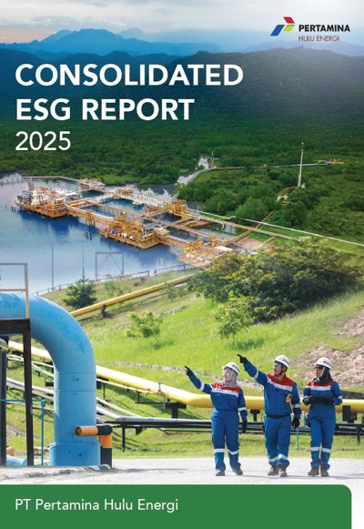

2025
Consolidated ESG Report
Materi pelaporan ESG tingkat grup Pertamina Hulu Energi.

Beranda / Keberlanjutan
Komitmen PHE WMO terhadap perlindungan lingkungan, efisiensi sumber daya, dan operasi migas yang bertanggung jawab.
Laporan dan transparansi
Dokumentasi kinerja keberlanjutan dan komitmen lingkungan dalam ekosistem Pertamina Hulu Energi. Sampul di bawah menggunakan materi visual yang tersedia pada aset project.

Materi pelaporan ESG tingkat grup Pertamina Hulu Energi.

Melindungi manusia, lingkungan, dan kinerja.

Menggerakkan ketahanan untuk masa depan berkelanjutan.
Fokus keberlanjutan
Jelajahi area keberlanjutan yang relevan dengan kegiatan operasi lepas pantai, pengelolaan fasilitas, dan hubungan PHE WMO dengan masyarakat.
01 / Sekilas
PHE WMO menjalankan kegiatan hulu migas di wilayah lepas pantai barat Madura dengan memperhatikan keselamatan pekerja, keandalan fasilitas, perlindungan lingkungan, dan hubungan yang baik dengan masyarakat sekitar.
Prinsip keberlanjutan menjadi bagian dari perencanaan, pelaksanaan, dan evaluasi kegiatan operasi.

02 / Tata Kelola
Pelaksanaan operasi mengacu pada prinsip tata kelola perusahaan yang baik, kepatuhan terhadap ketentuan yang berlaku, pengendalian risiko, serta penerapan nilai AKHLAK dan budaya HSSE.
03 / Lingkungan
Pengelolaan aspek lingkungan dilakukan melalui pengendalian dampak kegiatan operasi, pemantauan lingkungan, pengelolaan limbah, serta upaya pencegahan dan penanggulangan keadaan darurat pencemaran.


04 / Perubahan Iklim
Efisiensi penggunaan energi, pengelolaan emisi, dan peningkatan keandalan peralatan merupakan bagian dari upaya mendukung operasi migas yang lebih efisien dan bertanggung jawab.
05 / Sosial
PHE WMO berinteraksi dengan masyarakat di sekitar wilayah operasi melalui komunikasi pemangku kepentingan, program pemberdayaan, dan kegiatan tanggung jawab sosial yang disesuaikan dengan kebutuhan masyarakat.
Lihat program CSR

06 / Ekonomi
Operasi yang aman dan andal mendukung keberlanjutan pasokan energi, penciptaan nilai bagi pemangku kepentingan, serta kontribusi kegiatan usaha terhadap perekonomian di sekitar wilayah operasi.
07 / Transparansi
Informasi keberlanjutan dipublikasikan melalui laporan dan kanal resmi Pertamina Hulu Energi. Untuk informasi perusahaan tingkat grup, kunjungi situs resmi PHE.
Situs resmi Pertamina Hulu Energi ↗